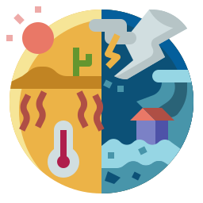

❤
DoeAki
PARTICIPE
O QUE É O PROJETO?

Quando desastres ambientais acontecem
Unimos ONG's que prestam apoio a voluntários em potencial!
ONDE JÁ ATUAMOS
Resgate de animais nos alagamentos em Petrópolis/RJ
Resgate, apoio e acolhimento nos deslizamentos no Morro da Santa Maria, em Santos/SP
Mutirão de limpeza após alagamentos em comunidade de Caraguatatuba/SP
❮
❯
COMO PARTICIPAR
Cadastre-se como voluntário
Se um desastre ocorrer dentro do seu raio
Você receberá uma notificação
AJUDE AGORA
DESLIZAMENTOS EM SÃO SEBASTIÃO/SP
AJUDAR